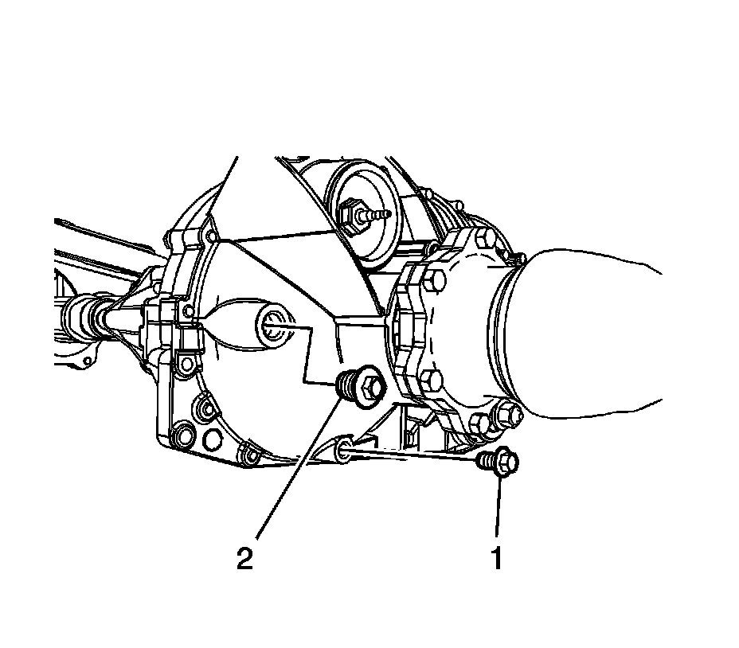

Front Axle Lubricant Level Inspection (9.25 Inch Axle)
Front Axle Lubricant Level Inspection (9.25 Inch Axle)
1. Raise the vehicle. Refer to Lifting and Jacking the Vehicle.
2. Make sure the vehicle is level.
3. Inspect the front axle for leaks. Repair as necessary.
4. Clean the area around the front axle fill plug.

5. Remove the front axle fill plug (1).
6. Inspect the oil level.
The 9.25 inch axle the oil level should be between 0-6 mm (0-0.25 in) below the fill plug opening.
7. If the level is low, add oil until the level is between 0-6 mm (0-0.25 in) for the 9.25 inch axle. Use the correct fluid. Refer to Sealers, Adhesives, and Lubricants.
Notice: Refer to Fastener Notice.
8. Install the fill plug.
Tighten the plug to 33 N.m (24 lb ft).
9. Lower the vehicle.